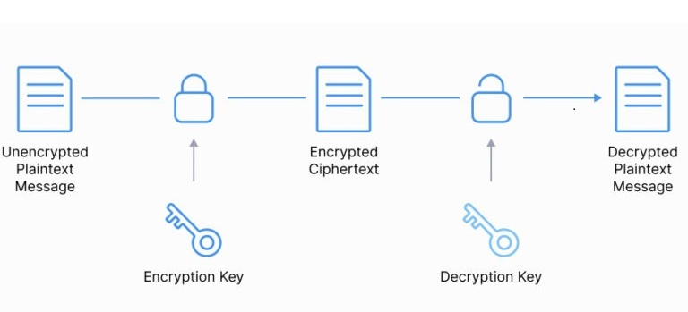

.
cipher
cipher is an algorithm for performing encryption or decryption.
cipher is used in transforming the readable data (plaintext) into coded data (ciphertext) and vice-versa.
cipher involves a series of well-defined steps that can be followed as a procedure, often used with a key
where, key specific pieces of information, that guarantees only the right person can get to the primary data.
1.
Classical Ciphers
Classical ciphers are those designed for manual operation and do not rely on computational power.
a.
Substitution Ciphers
units of plaintext are replaced with ciphertext according to a fixed system.
Caesar Cipher : shift each letter in the plaintext a fixed number of places down the alphabet.
Atbash Cipher : subbstitutes a letter with its reverse in the alphabet
Vigenère Cipher : encrypt alphabetic text by using a series of interwoven Caesar ciphers, based on the letters of a keyword.
b.
Transposition Ciphers
letters of the plaintext are rearranged in a systematic way, instead of Substituting them.
message is obscured through permutation rather than substitution.
Route Cipher : plaintext is written in a grid of specified dimensions, and then the ciphertext is formed by reading the letters off in a predetermined path.
Rail Fence Cipher : plaintext is written in a "zig-zag" pattern across a set number of rows.
Columnar Transposition : plaintext is written row-wise into a rectangle of a fixed width, and then the ciphertext is read off column-wise in a different order, often determined by a keyword.
c.
Composite Ciphers
combine both substitution and transposition techniques to create a stronger overall system.
NOTE
by modern standards,
they are generally considered insecure.
they are vulnerable to cryptanalysis (art of breaking codes),
especially when aided by computers that can test vast numbers of possibilities in seconds.
2.
Modern Ciphers
Modern ciphers operate on binary data and are designed to be resistant to the computational attacks that can break classical ciphers.
Modern ciphers are built on complex mathematical problems.
Modern ciphers security are based on secrecy of the key, not on algorithm.
classification based on key
a.
symmetric-key algorithms
same key is used for both encryption and decryption.
e.g. Twofish, Serpent, AES, Camellia, Salsa20, ChaCha20, Blowfish, CAST5, Kuznyechik, RC4, DES, 3DES, Skipjack, Safer, IDEA
b.
asymmetric-key algorithms
uses a pair of mathematically linked keys: a public key and a private key.

e.g. RSA, ECC, DSS, Diffie-Hellman.
Public Key:
openly distributed and can be shared with anyone.
data encrypted with the public key can only be decrypted with the corresponding private key.
Private Key:
kept strictly confidential by its owner.
used to decrypt messages that were encrypted with their public key.